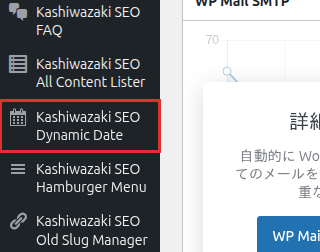

インストール・初期設定
プラグインのインストールから初期設定まで、ステップバイステップで解説します。
インストール手順
1
WordPress管理画面の「プラグイン」→「新規追加」→「プラグインのアップロード」からZIPファイルをアップロードします。
2
アップロード完了後、「プラグインを有効化」をクリックします。
3
有効化すると、WordPress管理画面の左メニューに「Kashiwazaki SEO Dynamic Date」が表示されます。

管理画面は「Settings」「Preview」「How to Use」「Examples」の4タブ構成です。
管理画面の構成
| タブ | 内容 |
|---|---|
| Settings | デフォルトの日付フォーマットを設定 |
| Preview | フォーマットとオフセットを指定して日付出力をリアルタイムプレビュー（AJAX） |
| How to Use | ショートコードの基本的な使い方を確認 |
| Examples | よく使うショートコードのサンプル集 |
デフォルトフォーマットの設定
1
管理画面の「Settings」タブを開きます。
2
「Default Date Format」欄にPHPの日付フォーマット文字列を入力します。デフォルトは Y年m月d日 です。
3
現在の出力プレビューが表示されるので、意図した形式になっているか確認します。
4
「変更を保存」ボタンをクリックして設定を保存します。
ここで設定したフォーマットは、ショートコードで format 属性を省略した場合のデフォルト値として使用されます。ショートコード側で format を指定すれば、個別に上書きできます。
よく使うフォーマット例
| フォーマット | 出力例 |
|---|---|
| Y年m月d日 | 2026年04月01日 |
| Y/m/d | 2026/04/01 |
| Y-m-d | 2026-04-01 |
| Y年m月 | 2026年04月 |
| Y | 2026 |
| n月j日 | 4月1日 |
プレビュー機能の使い方
1
「Preview」タブを開きます。
2
「Format」欄に日付フォーマット、「Offset」欄にオフセット値（例: +3d）を入力します。
3
プレビューボタンをクリックすると、AJAXで結果がリアルタイム表示されます。
プレビュー機能を使えば、ショートコードを記事に挿入する前に出力結果を確認できます。